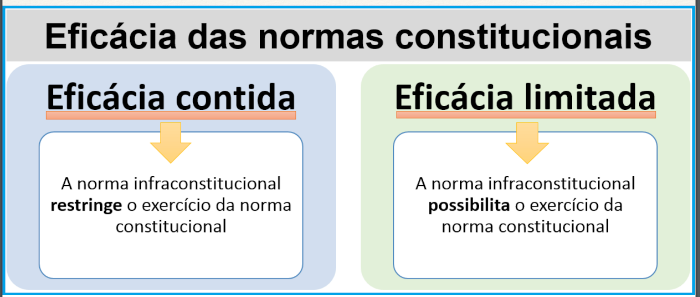

Remédios constitucionais
- Habeas Corpus - artigo 5º, LXVIII da CF; artigo 647 do CPP.
- Mandado de Segurança - artigo 5º, LXIX e LXX da CF e Lei 12.016/09.
- Mandado de Injunção - artigo 5º, LXXI da CF.
- Habeas Data - artigo 5º, X da CF e Lei 9.507/97.
- Ação Popular - artigo 5º, LXXIII da CF; Lei 4.717/65
- Ação Civil Pública – artigo 129, III, da CF e Lei nº 7.347/85
- Direito de Peticionar - artigo 5º, XXXIV da CF
Peticionar
Quem pode peticionar em um processo?
Qualquer cidadão pode entrar com uma ação nos Juizados Especiais, exceto o incapaz, o preso, as pessoas jurídicas de direito público, as empresas públicas da União, a massa falida e o insolvente civil .
Pode peticionar sem ser advogado?
Desde 31/1/23, está liberado o peticionamento eletrônico por meio de certificado digital para pessoas físicas, sem assistência de advogado, junto aos anexos relacionados no Comunicado Conjunto nº 45/23. O peticionamento intermediário também pode ser efetuado de forma eletrônica, com uso do certificado digital.
Para as ações de valor acima de 20 (vinte) salários mínimos é OBRIGATÓRIA a representação por advogado. Caso o cidadão não tenha condições financeiras, pode buscar auxílio da Defensoria Pública ou das Assistências Judiciárias das Faculdades de Direito.
Pode peticionar sem procuração?
Segundo Salomão, a regra legal não restringe o peticionamento aos processos nos quais o profissional tenha procuração, de modo que o ato, com a consequente juntada automática nos autos, pode ser praticado por qualquer advogado;
Quando o advogado não precisa de procuração?
104. O advogado não será admitido a postular em juízo sem procuração, salvo para evitar preclusão, decadência ou prescrição, ou para praticar ato considerado urgente.
Pode protocolar processo sem procuração?
Protocolo de petição pode ser feito por advogado que não tem procuração nos autos, desde que o autor da petição esteja devidamente habilitado.
Mandado de injunção
Conforme o artigo 2º da referida lei, o mandado de injunção deve ser concedido sempre que o direito fique prejudicado pela ausência parcial ou total de normas.
Mandado de Segurança
Segundo o § 3º do artigo 1º da referida lei, o mandado de segurança coletivo pode ser utilizado quando o direito violado pertencer a várias pessoas, e qualquer uma delas pode requerê-lo.
Conforme artigo 5º, não será concedido mandado de segurança no caso de: ato contra o qual ainda caiba recurso administrativo com efeito suspensivo; decisão judicial passível de recurso com efeito suspensivo; e, decisão judicial definitiva.
O mandado de segurança não pode ser usado para garantir a liberdade de locomoção ou o acesso à informação pessoal em banco de dados governamentais ou de caráter público, que devem ser reivindicados por meio de remédios constitucionais específicos, o habeas corpus e o habeas data, respectivamente.
Para ingressar com um mandado de segurança é necessária a atuação de um advogado ou defensor público.
Jus Soli e Jus Sanguinis
Entende-se por jus soli ou ius soli a adoção do critério territorial para atribuição da nacionalidade, de modo que quem nasce no território nacional tem a nacionalidade daquele país, enquanto por jus sanguinis o critério atrelado à filiação, de modo que indivíduo receberá a nacionalidade de seus genitores.
Normas de eficácia plena
São aquelas que, desde a entrada em vigor da Constituição, produzem, ou têm possibilidade de produzir, todos os efeitos que o legislador constituinte quis regular. É o caso do art. 2º da CF/88, que diz: “são Poderes da União, independentes e harmônicos entre si, o Legislativo, o Executivo e o Judiciário”.
- autoaplicáveis
- não-restringíveis
- aplicabilidade direta, imediata e integra
Normas constitucionais de eficácia contida
São normas que estão aptas a produzir todos os seus efeitos desde o momento da promulgação da Constituição, mas que podem ser restringidas por parte do Poder Público.Um exemplo clássico de norma de eficácia contida é o art. 5º, inciso XIII, da CF/88, segundo o qual “é livre o exercício de qualquer trabalho, ofício ou profissão, atendidas as qualificações profissionais que a lei estabelecer”.
- São autoaplicáveis
- são restringíveis
- Aplicabilidade direta, imediata e possivelmente não-integral.
Normas constitucionais de eficácia limitada
São aquelas que dependem de regulamentação futura para produzirem todos os seus efeitos. Um exemplo de norma de eficácia limitada é o art. 37, inciso VII, da CF/88, que trata do direito de greve dos servidores públicos (“o direito de greve será exercido nos termos e nos limites definidos em lei específica”).
- Não-autoaplicáveis
- Aplicabilidade indireta, mediata e reduzida.
José Afonso da Silva subdivide as normas de eficácia limitada em dois grupos:
A) Normas declaratórias de princípios institutivos ou organizativos: são aquelas que dependem de lei para estruturar e organizar as atribuições de instituições, pessoas e órgãos previstos na Constituição. É o caso, por exemplo, do art. 88, da CF/88, segundo o qual “a lei disporá sobre a criação e extinção de Ministérios e órgãos da administração pública.”
B) Normas declaratórias de princípios programáticos: são aquelas que estabelecem programas a serem desenvolvidos pelo legislador infraconstitucional. Um exemplo é o art. 196 da Carta Magna (“a saúde é direito de todos e dever do Estado, garantido mediante políticas sociais e econômicas que visem à redução do risco de doença e de outros agravos e ao acesso universal e igualitário às ações e serviços para sua promoção, proteção e recuperação”). Cabe destacar que a presença de normas programáticas na Constituição Federal é que nos permite classificá-la como uma Constituição dirigente.
Dicas para diferenciar as “contidas” das “limitadas”
❖ 1) Em regra, sempre que houver expressões como “salvo disposição em lei” será norma de eficácia contida.
❖ 2) Em regra, sempre que tiver expressões como “a lei disporá” será norma de eficácia limitada.
❖ 3) Enquanto não houver Lei a disciplinar norma de eficácia contida, esta poderá ocorrer de forma plena. Na norma de eficácia limitada ocorre o contrário, pois é impossível o seu exercício enquanto não houver a sua regulamentação.
❖ Normas de eficácia plena: artigo 132, “caput”. Art. 1º, art 2º, art. 14, art. 15, art. 44, art. 45, art. 77, etc..
❖ Normas de eficácia contida: artigo 5º, XIII. art. 5º, incisos VII, VIII, XXV, XXXIII, art. 15, inciso IV, art. 37, inciso I, etc.
❖ Normas de eficácia limitada de princípio institutivo: § 2º do artigo 18, art. 33, art. 90, § 2º, art. 109, inciso VI, etc.
❖ Normas de eficácia limitada programáticas: Artigo 196.
Isonomia
O princípio da isonomia, também conhecido como princípio da igualdade, é fundamental para que a aplicação da legislação pelo Poder Judiciário se dê a partir de cada indivíduo, levando em consideração suas particularidades. Igualdade, seja material ou formal
A isonomia material, ou isonomia real, tem como objetivo apresentar mecanismos práticos que tem como objetivo minimizar as diferenças entre os indivíduos de uma sociedade, possibilitando uma aplicação mais justa das leis e diversificando as possibilidades de todos.
O Estatuto da Criança e do Adolescente (ECA), para Pessoas com Deficiência (PcD), a Lei Maria da Penha (lei nº 11.340/06) é exemplo de isonomia material.
O que é o princípio da Isonomia no Direito tributário?
A isonomia tributária é prevista na Constituição Federal, em no art. 145 e no art. 150, inciso III.
O que é o princípio da Isonomia no Direito trabalhista?
A isonomia trabalhista equivale à vedação da distinção entre trabalhos. Desse modo, embora haja diferenciações prática e salariais, não se deve valorar a dignidade de outro trabalho, nos moldes do art. 7º, inciso XXXII, da CF. Por fim, o parágrafo único do art. 373-A, CLT, trata não do tratamento igual da legislação, mas de uma atribuição do Direito em busca da minoração das desigualdades.
O que é o princípio da Isonomia no Direito Processual Civil?
A isonomia é também um dos princípios do Direito Processual Civil. E aparece na medida em que o Direito visa garantir as mesmas condições de argumentação dentro do processo. Assim, dispõe o art. 7º, Novo CPC
Publicidade
O princípio da publicidade envolve a divulgação de informações pela Administração Pública. Esse princípio tem a finalidade de mostrar que o Poder Público deve agir com maior transparência possível, para que a população tenha conhecimento de todos os seus atos. Muitos doutrinadores alegam que a publicidade é um princípio instrumental, ou seja, ela não vale por si mesma, mas serve para outras finalidades práticas.
- Publicidade Formal: requisito de validade e/ou eficácia jurídica a atos convocatórios, intimações, contratos da Administração, etc.
- Publicidade Educativa: difusão de valores públicos como estímulo à geração de conscientização social ou divulgação de políticas públicas por meio de cartilhas, guias, entre outros.
- Publicidade Transparência: oferta de informações necessárias ao fortalecimento do controle externo e social do Estado, como a divulgação do orçamento, contratos, vencimentos, etc.
- Publicidade Interna: divulgação de informações internamente, dentro de um órgão público, com o objetivo de promover a coordenação de tarefas, capacitar agentes públicos e avaliar ações, por exemplo, em audiências governamentais, circulares etc.
O princípio da publicidade se desdobra em: Motivação e Transparência e acesso à informação.
Dimensões dos direitos humanos
os direitos da primeira geração, direitos individuais, os da segunda, direitos sociais, e os da terceira, direitos ao desenvolvimento, ao meio ambiente, à paz e à fraternidade, permanecem eficazes, são infra-estruturais, formam a pirâmide cujo ápice é o direito à democracia.”
glossário
Significado de Provida: Provida é o feminino de provido. O mesmo que: nomeada, cheia, armada, sortida, abastecida, aparelhada, fornida, ocupada, preenchida.
quinhoar:
verbo1.transitivo direto:
repartir em quinhões, em partes; partilhar.
"os vencedores quinhoaram os despojos do inimigo"
2.transitivo direto e bitransitivo
dar como quinhão; contemplar.
"o padrinho quer quinhoá-lo (com uma bela fortuna)"
Redutível
adjetivo de dois gêneros 1.que pode ser reduzido, diminuído, convertido. 2.que pode ser reprimido, refreado; reprimível. "uma intentona r. à ordem legal"A hipossuficiência econômica é a condição que ocorre quando uma pessoa – física ou jurídica – manifesta incapacidade financeira para custear as despesas relacionadas ao acesso à justiça. Isso significa que essa pessoa não consegue pagar taxas e custas da tramitação do processo, sem prejudicar seu sustento básico.